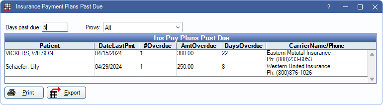

Insurance Payment Plans Past Due Report
Track Insurance Payment Plans with overdue payments using this report.
In Standard Reports, in the Monthly section, click Ins Pay Plans Past Due.
The Insurance Payment Plans Past Due Report lists patients with overdue balances on an Insurance Payment Plans. Insurance payment plan past due amounts do not show in the Payment Plans grid of the Account Module.
Filters
Set report criteria and filters to update the results.
Days past due: Enter the minimum number of days the insurance payment must be overdue to appear on the report. Payment plans with at least one payment overdue the number of days entered or greater are included.
Provs: Select the providers to include. Check All to include all listed providers. Filters by the provider assigned to the payment plan.
Clinics: Select clinics to include in the report. Ctrl + click to select multiple clinics or check All (includes hidden) to include all clinics, including those marked hidden.
- Filters by clinic assigned to the Insurance Payment Plan.
- If user is restricted to specific clinics, only accessible clinics are listed. When checking All (includes hidden), results include all clinics user has access to, including those marked hidden, and anything unassigned to a clinic; results do not include clinics user is restricted from.
Ins Pay Plans Past Due
The Ins Pay Plans Past Due grid updates immediately when filter criteria is changed.
Click a column title to sort results in ascending or descending order. The following is a description of the report columns:
- Patient: Last name and first name of the patient with an outstanding Insurance Payment Plan.
- DateLastPmt: The date of the last received insurance payment attached to the payment plan. 01/01/0001 indicates a payment has never been made.
- #Overdue: Number of scheduled payments for the payment plan that are overdue.
- AmtOverdue: Dollar amount of total overdue payments.
- CarrierName/Phone: Name and phone number of the insurance carrier attached to the overdue payment plan.
Print: Send the report results to the default printer.
Export: Save the results as a TXT or XLS file.